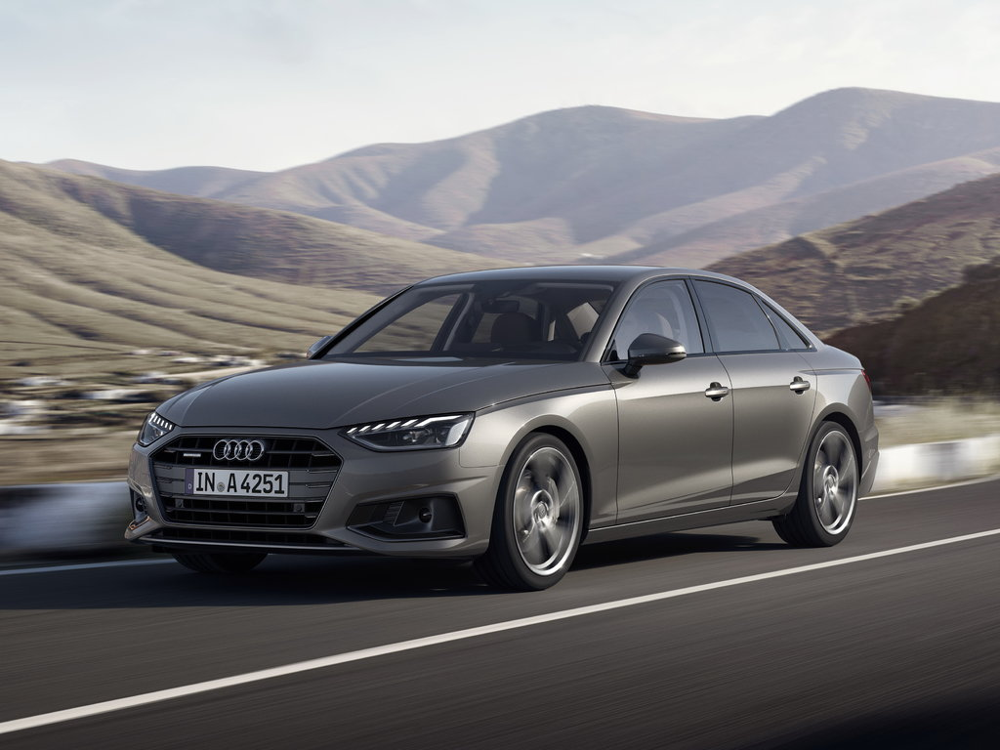
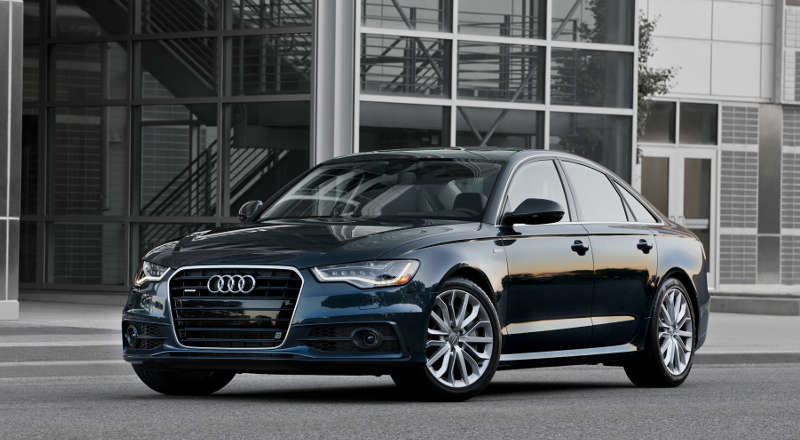
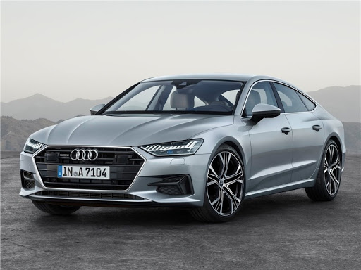
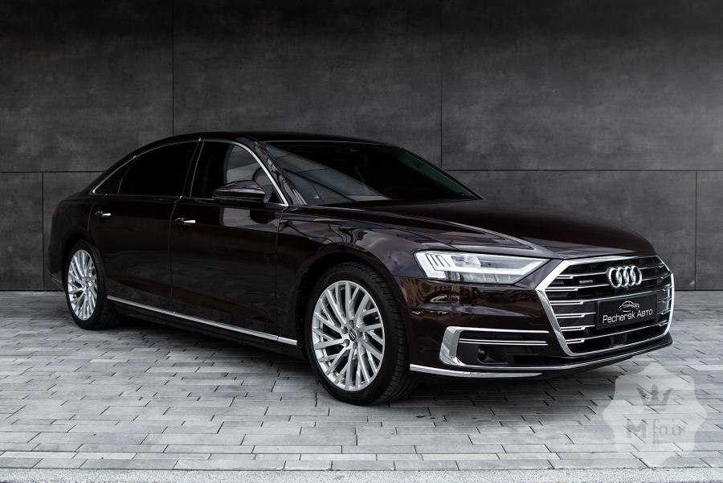

Завдяки новому дизайну й майже повністю оновленому кузову спортивні риси Audi A4 стали ще більш виразними: у його зовнішності динаміка й міць поєднуються з естетикою, яка приваблює. Високоякісний та високотехнологічний салон, новітні технології цифрового обладнання, інформаційно-командної системи Infotainment і допоміжних систем водія гармонійно доповнюють загальне враження
Audi A4 - втілення спортивних якостей, емоцій та престижності. Ці якості особливо добре помітні завдяки акцентам на динамічних елементах quattro та гармонійним пропорціям. Коли дивитися збоку, на додачу до широких крил і виразних накладок порогів увагу привертають перш за все колеса. Наступна галерея містить зображення Audi A4 Limousine з двома різними комбінаціями коліс та лакофарбового покриття. Варіант у кольорі Navarrablau оснащений 19-дюймовими легкосплавними дисками з 10 V-подібними спицями. Другий автомобіль вирізняється лакофарбовим покриттям кольору Manhattangrau та легкосплавними дисками діаметром 19 дюймів з 5 спицями у вигляді рукавів (дизайн Rotor).
Audi A4 Limousine - це втілення спортивності, емоцій і престижу. Це помітно в усіх деталях: у динамічних елементах кузова, що вказують на використання приводу quattro, і в гармонійних пропорціях. Суцільна хромована накладка поєднує між собою світлодіодні задні ліхтарі та виразно підкреслює горизонтальні лінії кузова. Рельєфний дифузор з вбудованими трапецієподібними вихлопними трубами надає спортивного вигляду задній частині. Збоку спортивні лінії кузова Audi A4 Limousine продовжують широкі крила й виразні накладки порогів. Доступний великій вибір коліс, частково в якості опції, у розмірах від 16 до 19 дюймів. Широка заглиблена решітка радіатора Singleframe, передній бампер і обрамлені широкою окантовкою повітрозабірники підкреслюють цілісність і міць передньої частини.
 БІЛЬШЕ ІНФОРМАЦІЇ>>>Збільшена радіаторна решітка Audi Singleframe, бічні повітрозабірники з хромованими планками у спортивному стилі, вузькі фари - передня частина седана A6 вражає своєю прогресивністю з першого погляду. Чітко окреслені лінії крил із потужними вигинами колісних арок підкреслюють міць повного привода quattro. Зовнішні дзеркала, розташовані на дверях, надають седану спортивного вигляду. А лінія даху в стилі купе елегантно переходить у рельєфну задню частину з характерними алюмінієвими елементами.
Світлодіодні фари Audi HD Matrix (опція) з динамічними покажчиками повороту вражають своїми можливостями. Вони забезпечують оптимальне освітлення полотна дороги, не засліплюючи при цьому зустрічний транспорт, і створюють світловий потік максимальної ширини завдяки зміщенню фокуса специфічних світлових сегментів назовні.
Світловий пакет для підсвічування контурів елементів інтер'єру (опція) зачаровує погляд і створює в салоні A6 Limousine неповторну атмосферу комфорту. Ідеальні лінії світловодів підкреслюють досконалість панелі приладів, центральної консолі та інших виразних елементів дизайну, підсвічуючи їх (доступні 30 кольорів підсвічування) та за потреби плавно змінюючи яскравість світла.
 БІЛЬШЕ ІНФОРМАЦІЇ>>>Лаконічність, гармонійна інтеграція та монолітний вигляд: сенсорні HD-дисплеї мультимедійної системи MMI High із високою роздільною здатністю, діагоналлю 10,1 та 8,6 дюйма й технологією зворотного тактильного зв'язку touch response бездоганно вписуються в дизайн панелі приладів і втілюють прогресивну концепцію керування. За допомогою верхнього дисплея водій керує мультимедійною системою. Нижній дисплей використовується для керування кліматичною установкою та функціями комфорту, а також для введення тексту.
Доступні на замовлення світлодіодні фари HD Matrix втілюють нову, унікальну мову світлового дизайну Audi А7 і є прикладом впровадження цифрових технологій: розташування 12 світлових сегментів, розділених вузькими проміжками, викликає асоціацію з двійковим кодом.
Надихаючі комбінації кольорів кузова й колісних дисків гарантують стильний результат і здатні задовольнити будь-який смак.
Пуризм, стримане благородство, почуття стилю. 20-дюймові легкосплавні диски з п'ятьма подвійними V-подібними спицями, пофарбовані в колір Typhoon Grey Metallic, втілюють класичну елегантність.
Підкресліть прогресивний і спортивний характер свого Audi A7 Sportback: обирайте легкосплавні диски Audi Sport діаметром 21" із п'ятьма V-подібними спицями у формі зірки, колір кузова - Firmament Blue Metallic, доступний на замовлення пакет стилізації екстер'єру S line, що включає ексклюзивні передній і задній бампери, дифузор у матовому кольорі Titan Black, а також хромовані патрубки вихлопних труб і декоративну вставку.
Ви можете не просто підкреслити динамічний характер свого Audi A7 Sportback, але й посилити його. Для цього вашій увазі пропонується комбінація з 21-дюймових легкосплавних кованих дисків із п'ятьма V-подібними спицями у формі зірки та кузова кольору Triton Blue Metallic. Унікальна зовнішність та ефектні акценти вам гарантовані.
БІЛЬШЕ ІНФОРМАЦІЇ>>>Благородні елементи екстер'єру забезпечують поєднання ексклюзивності зі спортивним характером і яскраво свідчать про неповторність Audi A8, у той же час нагадуючи про першу модель quattro.
Завдяки надзвичайно легкій конструкції Audi A8 можна вважати новим еталоном досконалості. Внаслідок розробки концепції Space Frame із використанням різних матеріалів кузов є найлегшим у своєму класі. Збільшена на третину жорсткість забезпечує виняткову маневреність у поєднанні з підвищеним комфортом руху.
В Audi A8 ви можете діяти максимально впевнено. Справа в тому, що у вашому розпорядженні буде небачена до цього часу комбінація об'єднаних систем. Ця інтелектуальна мережа з датчиків та алгоритмів за бажанням допомагає вам у будь-якій ситуації на дорозі, від автомагістралі до стоянки, та робить ваше пересування ще більш комфортним, впевненим та безпечним. Кількість систем допомоги водію сягає 41, і вони можуть розпізнавати та аналізувати актуальну обстановку під час руху, в разі потреби надають водію додаткову інформацію та поступово починають вживати заходів у випадку критичної ситуації. Ця максимальна комплектація - рішучий крок на шляху до автономного водіння.
Не важливо, коротка чи довга поїздка: в Audi A8 ви завжди можете бути впевнені, що доїдете до місця призначення, не напружуючись. Про це потурбується численне обладнання, яке завдяки своїй надзвичайній зручності в користуванні задовольнить ваші найвищі вимоги під час та після поїздки. Відомо, що всі водії автомобілів Audi отримують задоволення від керування. У Audi A8 ми перейшли на вищий щабель і зробили так, щоб кожен пасажир відчував себе особливим. Пасажири, які сідають на зручні задні сидіння, насолоджуються вільним простором, який відчутно збільшився навіть у порівнянні з простором у попередній моделі Audi. У той час, як технологія активної ходової частини забезпечує в будь-якій дорожній ситуації комфортні та динамічні відчуття від руху, елементи світлового дизайну та інноваційні функції систем комфорту й мультимедійної системи забезпечують задоволення від подорожі найвищого рівня. Напевно, в жодному іншому місці не можна настільки ефективно розслабитися під час руху, як у зручному сидінні Audi A8. Він пропонує пасажиру заднього сидіння найвищий рівень комфорту завдяки різноманітним можливостям налаштувань та доступній додатково функції масажу, а також підставці для ніг, що забезпечує максимально зручну позицію для відпочинку. Крім того, сидіння переднього пасажира може бути зміщене за допомогою електропривода далеко вперед, його спинка складається для забезпечення максимального простору для ніг, а масаж ніг на підставці та мультимедійна система заднього сидіння (Audi Tablets) ідеально довершують місце для відпочинку в задній частині салону Audi A8.
 БІЛЬШЕ ІНФОРМАЦІЇ>>>| 1 | 2 | 3 |
|---|---|---|
| 12 | 3 | |
| 1 | 2 | 3 |
| 1 | 2 | |
| 1 | 2 | 3 | 4 | 5 | |
|---|---|---|---|---|---|
| 1 | Текст | Текст | Текст | Текст | Текст |
| 2 | Текст | Текст | |||
| 3 | Текст | Текст | |||
| 4 | Текст |